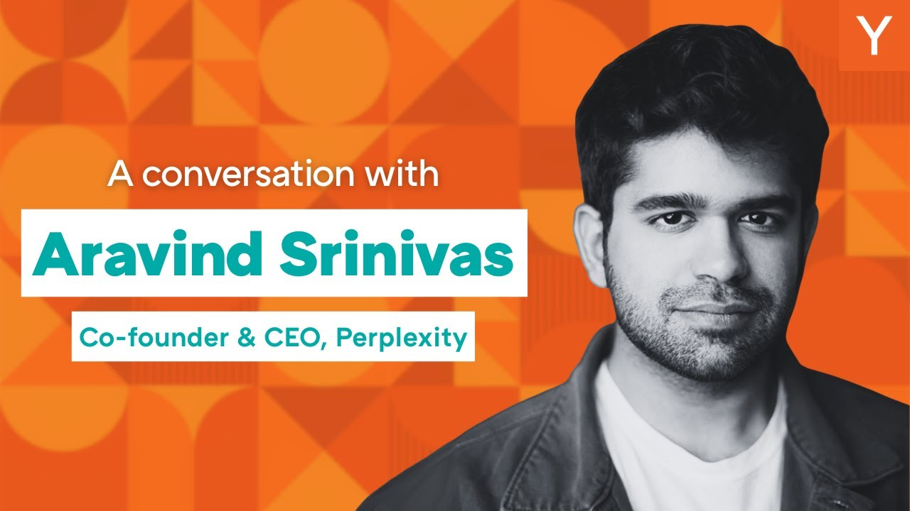

【与谷歌竞争，Perplexity构建AI代理式搜索】
Summary: The video features Aravind Srinivas discussing Perplexity's innovative approach to search, competition with tech giants, and future plans including a browser with AI agent capabilities.
摘要： 视频中阿拉文德·斯里尼瓦斯探讨了Perplexity在搜索领域的创新方法、与科技巨头的竞争以及未来计划，包括开发具备AI代理功能的浏览器。

⏱️ Estimated Reading Time: 70 min
📚 四级生词 📚 六级生词 📚 雅思生词 📚 托福生词 📚 专八生词 📚 SAT生词 📚 考研生词 📚 GRE生词 📚 高考生词 📚 其它生词生词
YC's next batch is now taking applications.
YC的下一批项目正在接受申请。
Got a startup in you?
你心中有创业想法吗？
Apply at ycombinator.com slash apply.
前往ycombinator.com/apply提交申请。
It's never too early and filling out the app will level up your idea.
行动永远不会太早，填写申请能完善你的创意。
Now on to the video.
现在进入视频内容。
You have to innovate to move faster than everybody else.
必须通过创新比所有人行动更快。
And it's like running a marathon but at an extremely high velocity.
这就像以极高速度跑马拉松。
The only mode you have is speed.
速度是你唯一的模式。
I read all the Twitter comments every time.
每次我都会阅读所有推特评论。
Google IO last year was AI overview and perplexity is dead.
去年谷歌IO的主题是AI概览，而Perplexity已死。
The stereo was AI mode and perplexity is dead.
今年是AI模式，而Perplexity已死。
And I read all of that too and it's always fun.
这些评论读起来总是很有趣。
I love it actually.
我其实很享受。
Airman I see you every, I don't know, two or three months and you give me an update on the latest on perplexity.
艾尔曼，我大概每两三个月见你一次，你都会更新Perplexity的最新进展。
Why don't you just tell these folks where you're at?
不如直接告诉大家现状吧？
How are things going?
进展如何？
Do people use perplexity?
有人用Perplexity吗？
Do you guys use perplexity?
你们用Perplexity吗？
No, whether you believe it or not, like I have infer issues every day.
信不信由你，我们每天都会遇到推理问题。
So there are a lot of people using it and this user is actually growing.
实际上有大量用户且增长迅速。
To the extent that we don't actually know how to deal with it, we have to rebuild the infer to scale the next 10x.
规模之大让我们不得不重建推理系统以实现10倍扩容。
So definitely a lot of people in the world using it.
全球确实有很多用户。
Thanks to all of you as well.
也感谢各位用户。
What is next for us?
我们的下一步是什么？
The browser, that's the big bet we're making as far as the future of the company goes.
浏览器——这是我们对公司未来的重大押注。
Everyone's here is like, why should I use perplexity even there's search and other AI apps?
大家会问：既然有搜索和其他AI应用，为什么还要用Perplexity？
Of course, chat GPT has a bigger distribution than us.
当然，ChatGPT比我们拥有更大分发渠道。
Every other AI app is trying to put searches in there in it.
其他AI应用都在内置搜索功能。
All of them support citations.
它们都支持引用功能。
A lot of them support some of the verticals we could work into.
许多还支持我们可以切入的垂直领域。
Yes, like we're always going to continue to remain better than others in that category.
是的，我们会始终保持在该领域的领先优势。
But I think the browser and agents are truly the next bet that we want to make.
但浏览器和代理才是我们真正的下一个赌注。
We think about it as an assistant rather than a complete autonomous agent.
我们将其视为助手而非完全自主的代理。
But one omnibox where you can navigate, you can ask informational queries, and you can give a agentic task.
通过统一搜索框实现导航、信息查询和代理任务下发。
And your AI with you on your new tap page, and your site car as an assistant on any of the page you are, makes the browser feel like more like a cognitive operating system rather than just yet another browser.
新标签页的AI助手和页面侧边栏助手，让浏览器更像认知操作系统而非普通浏览器。
And we hope to make it like a cloud where you launch several tasks in parallel.
我们希望使其像云端般并行处理多任务。
That are running asynchronously.
这些任务异步运行。
And pulling all your personal context, your email, your calendar, your Amazon, your all sorts of social media accounts that you have.
整合邮箱、日历、亚马逊账户等所有个人上下文。
And you go and do research on real estate, the markets.
可进行房地产、市场调研等操作。
And these are all just processes running on your browser.
这些都只是浏览器上运行的进程。
That's never been possible before.
这是前所未有的体验。
And Chrome was exciting when each tab was its own process.
当初Chrome让每个标签独立进程就很惊艳。
You think about each query or each prompt could be that.
现在每个查询或指令都能如此。
And that will be our new browser comment.
这就是我们的新浏览器愿景。
So they're putting all our energy into that.
因此我们全力投入于此。
This was going to be the hard question I saved for the end.
这原本是我留到最后的核心问题。
But since you queued it up, I'll do it right now.
既然你提到了，我现在就回答。
I think if Sam Altman were still on the stage today, he would say, oh yeah, that's what we're doing.
若Sam Altman在场也会说"这正是我们在做的"。
And I think Sundar at Google probably would say, that's the direction we're headed as well.
谷歌的Sundar也会说这是他们的方向。
So it feels like there are a bunch of players.
看来有多家竞争者。
Now many of them very well funded.
其中许多资金雄厚。
Going in generally the same direction, how do you see the world?
大体方向相同，你如何看待这个局面？
Do you think that it's going to play out where there's actually a bunch of different use cases and you can own a very important one that others won't want to own?
你认为会分化出不同用例，而你们能占据关键领域吗？
Or are we in for a major competitive battle?
还是将面临激烈竞争？
Look, if something was really worth doing, it's really natural that people with a lot of funding will go and do it.
听着，真正有价值的事自然会有资金涌入。
People said, for Flexi, it's a great product.
就像Flexi曾被盛赞。
Now everyone is trying to do something that can answer any question with sources.
现在人人都在做带来源的问答产品。
Cursor was a great product.
Cursor曾是优秀产品。
Now, opening eyes trying to buy Cursor's competitor and through our pick launch code, like, clot code, Google has its own, like, rival tools.
现在OpenAI试图收购Cursor竞品，谷歌也推出类似工具。
So it's only natural that when there's a lot of money to be made in a certain sector, people are going to try to copy it.
有利可图的领域必然引发模仿。
And there's only a limited amount of things you can be world-class at, whether it's being building great models or building one or two really good products.
世界级能力有限，无论是构建模型还是打造产品。
So you're obviously not going to win on everything.
显然无法全胜。
For us, this is the only thing we care about.
我们只专注这一点。
Accuracy at the level of answers, accuracy at the level of tasks, orchestrating all these different tools.
答案准确性、任务精确性及工具协同能力。
The browser is much harder to copy than, like, yet another chat tool.
浏览器比聊天工具更难复制。
That said, I'm fully working with the assumption that OpenAI will also build its own browser.
但我假设OpenAI也会做浏览器。
And Throbic will also try to build its own browser.
Anthropic同样会尝试。
Google already has one called Chrome.
谷歌已有Chrome。
So it's completely reasonable to expect them to do it.
他们跟进很合理。
And the only mode you have is speed.
你唯一的武器是速度。
You have to innovate.
必须持续创新。
You have to move faster than everybody else.
要比所有人都更快。
And it's like running a marathon but at an extremely high velocity, right?
就像高速跑马拉松对吧？
Yeah, I really agree with your statement that, like, you can only focus on one thing and be world-class at one thing.
我完全同意"专注单一领域做到世界级"的观点。
And just to give you guys a little glimpse into it, we were backstage before this talk, and he was showing me some of the new stuff that they're working on.
透露些幕后花絮：开场前他向我展示了新功能。
And there was, like, a bug, right?
当时出现了一个bug。
And he stopped everything he was doing to, like, figure out what was wrong with this bug.
他立即停下手头工作排查问题。
Why was it not doing the right thing?
为什么功能异常？
And if you think about, like, what would the CEO of a large company do in that situation, probably they would, like, hand it off to somebody else on their team.
大公司CEO可能会交给团队处理。
So it's like a good piece of evidence that you actually mean what you say.
这证明你言行一致。
Yeah, I love triaging and fixing bugs.
我热爱排查修复bug。
I know it sounds trivial.
听起来可能琐碎。
Is that the best use of the time of CEO?
这是CEO的最佳时间利用吗？
Are there a lot of people who would think otherwise?
很多人会反对吧？
Recently, people are like, oh, I hope this behavior is rubbing off.
最近有人说希望这种作风能传染。
And there's like, I've noticed even Sundar is doing bug support on X right now.
我注意到Sundar也在X上处理bug了。
So I'm happy that, like, you know, that's setting a good example.
很高兴这树立了好榜样。
Great.
太好了。
Okay, let's go back to the beginning.
让我们回到最初。
Like, most of the folks in the audience here are either students or recent grads or grad students.
在场观众多是学生或应届毕业生。
And I think hearing your story of, like, how you started perplexity would be really interesting to them because it's probably exactly the world that they're in now.
他们会对Perplexity的创立故事感兴趣——这正是他们所处的阶段。
Yeah.
是的。
So, let's see how you got started.
请分享创业历程。
We started the company without actually having clear idea of what to build, which is the opposite of what YC advices, which is start from a project and turn it into a company.
我们创立时没有明确方向，这与YC"从项目起步"的建议相反。
I really think at this point in time when AI is improving so fast, you don't have to rigidly stick to any one idea when you're getting started.
在AI飞速发展的当下，起步时无需固守单一想法。
But the most important thing is you don't change the idea every week.
但切忌每周更换方向。
Like, that you shouldn't do either.
那也不可取。
So start with something like brainstorm, think about it, and then try to immediately build it and get it in the hands of people.
应该先头脑风暴，快速构建并交付用户。
One tool that we were building was natural language to SQL, which we actually thought about it as a search tool searching over relational databases.
我们曾开发自然语言转SQL工具，本质是关系数据库搜索引擎。
I allowed Twitter search, but it never, like, like, the original version of Facebook graph search.
设想过Twitter搜索，类似早期Facebook图谱搜索。
I allowed that when I was much younger.
这个想法由来已久。
So I wanted to, like, rebuild that, but using language models.
现在想用语言模型重建该功能。
And I allowed Twitter as a platform.
以Twitter为平台。
So it was, there's no good way to search over Twitter.
当时Twitter搜索体验很差。
There still is no good way to search over Twitter.
至今仍未改善。
But at least at the time we organized the entire Twitter's data in the form of, like, relational tables.
当时我们将Twitter数据组织成关系表。
And just converted every user's query into a SQL query and ran it against the database.
把用户查询转为SQL语句执行。
It was really, really good.
效果非常好。
And that's what God has started.
这就是创业起点。
But at some point we figured it's better to, like, scale this across the web.
后来决定扩展到全网。
And we cannot make every website in the form of tables.
不可能把所有网站表格化。
And neither is it actually easy to answer all sorts of questions.
回答各类问题也不容易。
So we bet on the fact that language models can do all the reasoning and parsing and, like, structuring later.
于是押注语言模型的推理解析能力。
But the more important thing is to start with something more unstructured.
关键是从非结构化数据入手。
And that ended up becoming perplexity.
最终演变成Perplexity。
Got it.
明白了。
And maybe one step before you actually left to go start the company, like, how did you find your co-founders?
创立公司前，如何找到联合创始人？
How did you decide that machine learning and AI was like the area you wanted to focus on?
为何选择专注机器学习与AI领域？
Because that was the only thing I was good at.
因为这是我唯一的专长。
I was not good at anything else.
其他领域都不擅长。
Okay.
好吧。
So what's the point starting company?
那为什么要创业？
I cannot start a delivery company or a social media company.
我不适合做配送或社交媒体公司。
Like, I'm not the right fit.
那不是我的领域。
The only thing I knew was AI and machine learning.
我只懂AI和机器学习。
In fact, it's funny.
有趣的是。
We started an AI company.
我们创立AI公司。
But we're not made fun of not even training our own models.
却连自研模型都没有。
But only the foundation models and stuff we don't train.
仅使用基础模型。
We trained so many different models.
其实训练过很多模型。
But that's the extent to which you need to have the intellectual humility to know, like, what you're good at.
这需要自知之明——清楚自身能力边界。
What is actually doable for you within the resources that you have access to?
在现有资源下能实现什么？
And the co-founders are like people like, like, a new from grad school.
联合创始人来自研究生同学。
So we'd been talking and discussing ideas for a long time.
我们长期交流想法。
And I think grad school is a great way to, like, you know, like, identify a co-founders.
研究生阶段是寻找合伙人的好时机。
You don't talk to them with the, with over the long-term calculation of, like, oh, this could be my co-founder of my future company.
无需刻意盘算"这人可能是未来合伙人"。
You talk to them because they're interesting people.
交流源于志趣相投。
And I think that's essentially the value of the Y-Comminator network.
这正是YC网络的价值。
So even if your first startup your fails, you get access to a lot of amazing people.
即使首次创业失败，也能结识优秀人才。
And maybe they could be a future co-founder style.
他们可能成为未来合伙人。
That's essentially what grad school was for me.
研究生经历对我就是如此。
Yeah, that's awesome.
这很棒。
Okay, so you launched this first version of Proplexity, which is largely to, like, do Twitter search effectively.
你们最初推出的是Twitter搜索版Perplexity。
Yeah.
是的。
At what point did it, like, start to work?
何时开始见效？
And you maybe internally felt like, oh, we should keep working on this.
团队何时确信应该继续这个方向？
This is going to be something to explore.
觉得值得深入探索？
Yeah, so whoever we gave early access to, they were all very excited about it.
所有早期用户都非常兴奋。
They kept using it repeated.
持续使用。
I think there is a phenomenon in products where there's an initial wow factor.
产品通常有"惊艳期"。
And then mostly either drops completely.
之后要么完全弃用。
That means you never had real retention.
说明没有真正留存。
Or it definitely drops, but there are sustained usage.
要么使用量下降但保持稳定。
So when we saw that for the relational database search, it's like, Twitter, LinkedIn, GitHub, we knew that we had, like, there was something magical about combining large language models in search.
当看到Twitter/LinkedIn/GitHub的数据库搜索留存时，我们意识到LLM与搜索结合的魔力。
But then what we did is, like, we dream bigger and said, what if we just give answers and cite the relevant sources?
于是我们扩大愿景：直接提供带来源的答案。
We launched that as a discord bot, and that was also continually being used.
推出Discord机器人后也获得持续使用。
It was not like a one-day usage, and people started ignoring it.
并非一日热度。
So that's when we decided we had the courage to launch it.
这才有勇气正式发布。
We launched it seven days after the chat GPT launch.
在ChatGPT发布七天后上线。
Especially at the time when chat GPT did not have web search.
当时ChatGPT尚无联网搜索功能。
That was a good moment.
这个时机很好。
And I think like many of the successful AI products that people speak about today, cursor included, all were like 20-22 launches, or like early 2023 or late 2022 launches.
我认为和如今人们谈论的许多成功AI产品一样，包括Cursor，它们大多在2020-2022年或2023年初/2022年底发布。
So they're all like old people in the AI timescale.
以AI的时间尺度衡量，它们都算"老古董"了。
Yes.
确实。
For me, the aha moment was like the newer EVE, there was like closest 700,000 queries.
对我来说，顿悟时刻是在某个新年前夕，当时查询量接近70万次。
And I was like, okay, this has a crappiest name for a consumer product.
我当时想，这大概是消费产品中最糟糕的名字了。
It's called perplexity.
它叫"Perplexity"。
Very hard.
非常拗口。
Nobody even knows how to share it.
甚至没人知道怎么拼写它。
And then it was so slow, it took seven seconds to answer for a query at the time.
当时速度极慢，每个查询需要7秒响应。
And it was making a lot of mistakes, hallucinations.
还经常出错，产生幻觉回答。
And like a no-name company, no-name founder, one or two million dollars in seed funding.
而且我们是无名公司，创始人没名气，只有一两百万美元种子资金。
Despite that, people were caring enough to share screenshots.
尽管如此，人们仍愿意分享截图。
And like, and a new year eve, and you could be watching Netflix, right?
在新年前夜，人们本可以看网飞节目。
So that's when I knew there was something real here.
那时我意识到这是真正有价值的东西。
And I started like optimizing for like, you know, committing to this vision.
于是我开始全力投入这个愿景。
Okay.
好的。
And at that point, like on that new year's eve, did you in your head think I'm building a thing that could really compete with Google and like take over a market as big as what Google offers?
当时在新年前夜，你是否想过自己在打造能真正挑战谷歌、抢占其市场份额的产品？
No.
没有。
Or was it just a toy for you?
还是说它当时只是个玩具？
The first time that thought occurred to me was when Google wrote a blog post, when they wrote a blog post about Bard.
我第一次产生这个想法是谷歌发布Bard博客文章时。
Like that was around the time when we were raising series A funding.
那时我们正在进行A轮融资。
And everybody said, okay, Bard is going to do whatever you're doing.
所有人都说Bard会取代我们。
And it's like, why do we have to build Bard?
就像在问：为什么还要另建Bard？
Like why not just do it on Google, right?
为什么不直接在谷歌上实现？
Where you have all the distribution in the world.
毕竟谷歌拥有全球分发渠道。
So why do you have to build a separate product?
为何还要单独开发产品？
Like just just update your core, main, all the best possible asset to do this.
直接升级核心产品不就好了？
Exactly.
正是。
And when I kept thinking it was pretty obvious, you cannot.
但深入思考后很明显：他们做不到。
Like if people can get answers to best who tells to stay in San Francisco with a view of the Golden Gate Bridge or like Bay Bridge, or like where can I stay in New York, like next to the central part with good amenities, or like which flight is the best thing for me to take to fly from Sceptor London?
比如用户询问"旧金山金门大桥景观酒店"、"纽约中心区优质公寓"或"伦敦至西雅图最佳航班"。
If you get direct answers to these questions with booking links right there, how are you going to mint money from booking and expedia and kayak and like, like you know, all like same same same same thing for shopping?
如果直接提供带预订链接的答案，如何从Booking/Expedia/Kayak等平台盈利？购物领域同理。
How are you going to take money from Amazon and like Walmart for the same ad where they're all bidding against each other?
当亚马逊和沃尔玛竞标同一广告位时，如何收费？
It's not in their incentive to give you good answers at all.
它们根本没有提供优质答案的动力。
So that's when I realized that they have to build a separate product, but they can never capitalize on their core distribution.
于是我明白：他们必须另建产品，却无法利用核心分发优势。
And 2024, 2023 especially and large part of 2024 too.
尤其在2023年和2024年大部分时间。
Google had like maybe the fourth of fifth best models at any moment.
谷歌的模型排名仅第四或第五。
So as a startup outside Google, you had access to AI that was better than what Google internally had.
作为外部初创公司，我们却能使用优于谷歌内部的AI。
Which was unprecedented, right?
这前所未有。
Until then, if you had to compete with Google and you had to build something that needed a lot of AI in it, good luck, right?
此前若想用AI产品挑战谷歌，几乎不可能。
Like because you never have an AI outside Google that's even equal, leave alone being better.
因为外部AI连持平都难，更别说超越。
But now it's a completely reversal of the situation thanks to open AI or anthropic or open source models.
但如今由于OpenAI/Anthropic/开源模型，形势彻底逆转。
So that plus innovator dilemma, plus the fact that we could make a lot of mistakes and it's fine, whereas for Google, one mistake tanks their stock.
加上创新者困境，以及我们能承受犯错（而谷歌一次失误就导致股价暴跌）。
Like you remember the live demo of Bard where it failed in the stock, when it was 6%.
比如Bard演示出错导致股价跌6%。
So we knew that there was a lot of advantages for us.
所以我们知道自己优势明显。
Yeah, I heard you talk about this recently, but Google specifically has been trying to build perplexity-like experiences.
听说谷歌一直在尝试构建类似Perplexity的体验。
And you know, you know, you know, AI mode.
比如"AI模式"。
Yeah, they just like change the name of it each Google IO.
他们在每届Google I/O都换个名字。
And then not.
然后不了了之。
It's true, right?
确实如此。
I'm not, I'm not like saying something.
我并非刻意批评。
That is, yes.
事实如此。
Right.
对。
So it's like I, I look at it might sound a little cocky to say that, but it's true.
可能听起来傲慢，但这是事实。
The same feature as being launched year after year after year, with a different name, with a different VP, with a different group of people, but it's the same thing.
相同功能年复一年发布，只是名称、负责人和团队不同。
Except maybe it's getting better, but it's never getting launched to everybody.
或许有改进，但从未全面推广。
One of the things I've come to admire about you is you really have a focus on the user experience.
我欣赏你对用户体验的专注。
And you told me how you kind of learned that from Larry Page by reading the book about Google.
你说这是通过阅读谷歌相关书籍从拉里·佩奇那里学到的。
Why do you think Google has lost that ability?
为何谷歌失去了这种能力？
Well, it's much bigger business, right?
因为业务规模太大。
And it's not founder-led anymore.
且不再由创始人领导。
It's hard to take risks.
难以承担风险。
I think they have great people.
他们仍有优秀人才。
Nobody, like, no one in this audience would think Google has incompetent people.
在座没人会认为谷歌员工无能。
I think they're like really great engineers.
他们的工程师非常出色。
It's largely the incentive structure.
主要是激励机制问题。
It's hard to take a hit on your own stock and do the thing that's long-term correct.
很难为长期正确决策承受股价波动。
So, a honesty, I'm happy that that sort of dilemma exists, because otherwise, where is the opening for startups?
说实话，我庆幸这种困境存在，否则初创公司哪有机会？
If startups can succeed, then it's going to be, Monopoly is getting bigger and bigger, and that's not great for the world.
若初创无法成功，垄断将加剧，这对世界不利。
I actually am very happy that we're able to win, and they're also able to ship new products, and people are first-time comparing.
我很高兴我们能赢，他们也能推出新产品，用户首次开始比较。
Earlier, for access to information, you would never even bother to compare an alternative to Google.
以前没人会费心比较谷歌的替代品。
That was considered a waste of time and joke.
那被视为浪费时间或笑话。
Now, at least, you're like, oh, I first go ask this app, like I'll ask Google, or last chat GPT, or last perplexity, or last Gemini.
现在用户会说：我先问这个App，或谷歌/ChatGPT/Perplexity/Gemini。
And then maybe you don't even ask Google anymore.
甚至可能不再使用谷歌。
You just ask the AI apps, and there are a bunch of AI assistants, and the phone makers will start offering all of them as alternatives.
直接询问AI应用，手机厂商也将提供多种AI助手选择。
So it's not going to be like a locked-in default search option.
默认搜索引擎将不再被垄断。
So I'm really happy that they're competing in a world where a monopoly, hopefully, doesn't exist, and that creates a more fair ground for everybody.
我很高兴他们在一个（希望）不存在垄断的世界竞争，这创造了更公平的环境。
Yeah.
是的。
Yeah, you're also telling me backstage about, you are facing this increased competition from a variety of folks, but if you look at your numbers, you haven't really seen the effect.
你说面临多方竞争，但数据未受影响。
You know, I read all the Twitter comments every time.
我读过所有推特评论。
The Google I.O. Exactly the same set of comments repeated this year.
今年Google I/O的评论与往年如出一辙。
Google I.O. last year was AI overview, and perplexity is dead.
去年说"AI概览"发布后Perplexity将死。
The year was AI mode, and perplexity is dead.
前年说"AI模式"会杀死Perplexity。
And I read all of that too, and it's always fun.
我觉得这些评论很有趣。
I love it, actually.
实际上我很喜欢。
Because they know that they're all thinking, I don't even expect these things, other people in the company are thinking Google wouldn't build this, or something like that.
因为他们知道公司内部也有人认为谷歌不会这样做。
But reality is, nobody actually gets exposed to those features.
但事实上，没人真正用过那些功能。
But competition is real.
但竞争确实存在。
Let's assume, let's accept that OpenAI is extremely well-funded, doesn't have all these innovator-dialma problems, wants to actually ship search on the chat GPT.
假设资金充足的OpenAI没有创新者困境，真要在ChatGPT推出搜索功能。
Chat GPT is the most successful consumer AI product out there.
ChatGPT是最成功的消费级AI产品。
And so competing against it is very difficult, which is why I really want to push the company more on the browser site.
与之竞争很难，因此我想重点发展浏览器。
And I think comment, the browser will be an abstraction layer, about chatbots.
我认为浏览器将成为聊天机器人的抽象层。
You could even imagine, if you permit comment, all your chat GPT chats can be fed into that AI, and you don't even have to worry about memory or personalization, or any of these things.
比如允许将ChatGPT聊天记录导入，无需担心记忆或个性化问题。
And it'll do a thing, a lot of new things that a chatbot cannot do, like accessing other tabs, accessing your browsing history, going in completing forms for you, like paying your credit cards, buying stuff for you, and being a scout, you know, going and doing all the research for you, that sort of thing, like, periodic recurring tasks.
它还能实现聊天机器人无法完成的任务：访问其他标签页/浏览历史、填写表单、支付信用卡、购物、调研等周期性任务。
I think that's the magic that the browser enables for you, and putting it into like mobile, like building mobile versions of this browser, it's going to be very hard, like just engineering wise, it's going to take many months.
这就是浏览器的魔力，但开发移动版将非常困难，需数月工程时间。
So I'm not really worried about someone else trying to copy this, it's going to take time for anybody.
因此不担心被抄袭，这需要时间。
Switching to a different browser is like a pretty big decision for a user.
对用户而言，更换浏览器是重大决定。
What do you think will be the very short-term things that your browser will do so much better than what I can get today in Chrome that will make me want to switch?
短期内你们的浏览器将有哪些优于Chrome的功能促使用户切换？
The perfect blend of AI, navigation, and agents, is what we're going to offer.
我们将提供AI、导航和代理的完美融合。
And might sound like a boring answer, but no one's done that.
听起来平淡，但无人实现过。
And there are like hundreds of millions, probably close to a billion people using AI these days.
目前有数亿甚至近十亿AI用户。
So the market's already pretty big.
市场已足够大。
What's like a specific example of how I would do that?
能否举例说明具体应用场景？
If I had access to it tomorrow.
假设明天就能使用。
You can schedule your meetings.
可以安排会议。
You can reply to some of your emails that you don't even want to read.
自动回复不想阅读的邮件。
Like for example, let's say you're hosting a Y-Comminator event, and you say, I only want to accept Stanford Dropouts.
比如举办YC活动时，设置"仅接受斯坦福辍学生"条件。
And it can go through the entire list of people who applied, and just filter based on who's, you know, to scrape their LinkedIn URLs, filter based on whether they were Stanford, and whether they dropped out or not, and then accepted.
它能遍历申请者名单，抓取LinkedIn链接，筛选斯坦福辍学者并发送录取通知。
Like that level of multi-step reasoning is something that can uniquely do.
这种多步推理是我们的独特优势。
By the way, I'm not saying that's a good filter.
当然这并非好的筛选标准。
I wouldn't get it otherwise.
否则我也进不去。
So hopefully you're more open.
希望你们更开放些。
Yeah.
是的。
We look for deep-mind researchers.
我们寻找DeepMind研究员。
Also.
之类的。
Yeah, don't worry.
别担心。
Okay, cool.
好的。
Let's talk a little bit about how you run the company now.
谈谈你现在如何运营公司。
Right?
好吗？
I don't know if you wanted to say how many employees you have.
不知你是否愿意透露员工数量。
Yeah, we have about 200.
约有200人。
Okay, so the company's getting bigger.
公司规模在扩大。
You now have access to code writing AI tools.
你们现在使用AI编程工具。
Are you guys just like, fully in on that stuff?
是全面采用吗？
Are you vibe-coding everything?
所有代码都靠AI生成？
What's it look like?
具体情况如何？
I mean, you don't want to wipe code everything, right?
并非所有代码都靠AI生成。
Like, we frequently run into inference use, and you don't want to wipe code right there, fixing it or live things on production.
比如推理使用时，不能依赖AI修复生产环境问题。
Like, I do want people well-trained and regular software engineering, infrastructure, distributed systems.
我需要训练有素的软件工程师处理基础设施和分布式系统。
Like, you don't want to replace these skills.
这些技能无法被替代。
But yeah, front-end design.
但前端设计不同。
That's where we are seeing tremendous adoption.
这方面AI采用率极高。
Like, cursor is being used by everybody.
全员使用Cursor。
We made it mandatory to use at least one AI coding tool.
我们强制要求使用至少一种AI编程工具。
And internally, it's a complexity that happens to be cursor and like, mix of cursor and GitHub co-pilot.
内部来看，它本质上是Cursor与GitHub Copilot的混合体。
But yeah, we definitely made it compulsory.
但没错，我们已强制推行使用。
And so the way machine learning people are using it, AI people are like, sometimes they read a paper and they can just upload a screenshot of the pseudocode.
机器学习从业者的使用方式是：AI研究人员阅读论文后，直接上传伪代码截图。
And ask cursor to just edit the files to implement this new algorithm.
然后让Cursor编辑文件以实现新算法。
And then it's able to write its own unit tests and then run an experiment pretty quickly.
它还能自主编写单元测试并快速运行实验。
That is reducing experimentation time from like three or four days to literally one hour.
这将实验时间从三四天压缩至短短一小时。
Or there are people who don't know design.
还有些人不擅长设计。
And so sometimes I just give them feedback where I take a screenshot of my iOS app.
于是我常直接截取iOS应用截图作为反馈。
And I said, this button needs to move here with an arrow.
比如用箭头标注“按钮需移至此处”。
And they upload my screenshot to cursor and then ask it to like write a change to the SwiftUI file.
他们上传截图至Cursor，要求修改SwiftUI文件。
So that level of change is incredible.
这种层级的修改令人惊叹。
Like the speed I wish you can fix bugs and ship to production is crazy.
修复漏洞并快速上线的速度超乎想象。
The more bugs there are, as long as you can fix them fast.
只要修复够快，漏洞多也无妨。
Yeah, bugs are always ahead of like how fast people can write code though.
但漏洞数量总超过编码速度。
But it just just to be clear, I'm a big fan of all these tools.
必须声明，我十分推崇这些工具。
But it is also introducing new bugs.
但它们也引入了新漏洞。
And many people don't know how to fix them.
许多人不知如何修复。
And they don't even know how the bug got introduced and they have to go find it again.
甚至不清楚漏洞来源，需重新排查。
So it's not perfect.
因此它并非完美。
And I actually like the more newer tools like clawed code seems to be far smarter than like what cursor is able to do.
实际上，我认为Clawed Code等新工具比Cursor更智能。
So I'm actually like like really positive that this is the right future.
我坚信这是正确方向。
But there are issues right now.
但当前仍存在问题。
Yeah.
是的。
Yeah.
没错。
In talking to a lot of folks here, one of the major questions that I've heard is as these coding tools get better and better and better, what is the like actual enduring value of a company like yours?
与众人交流时，核心问题是：随着编码工具日益强大，像贵司这类企业的持久价值何在？
If increasingly it's easy to replicate what you have done using these tools.
若用这些工具能轻易复制你们的成果。
What's your take on that general type of question?
你如何看待这类问题？
I mean, brand definitely has a big value, right?
品牌显然极具价值。
Like there are cursor competitors for complexity competitors.
比如Cursor的竞品层出不穷。
Like opening I will have like their own cursor.
OpenAI也会推出自有版本。
Opening I has perplexity within chat GPT that did not kill any of these companies.
ChatGPT内置Perplexity功能却未扼杀任何公司。
So there is a certain brand value that once you acquire the scale of like several millions of users, paying users, you don't actually die that fast.
当用户规模达数百万付费用户时，品牌价值能延缓衰亡。
You learn the right to survive and keep building.
你们赢得生存权并持续构建。
So brand is important.
故品牌至关重要。
Narrative is very important to the brand.
品牌叙事同样关键。
Like you have to communicate to people why do you even need to exist.
需向用户阐明存在意义。
For us, it's the focus on accuracy.
对我们而言，核心是准确性。
Okay, let there exist 100 chat bots but we are the most focused on getting as many answers right as possible.
纵有百款聊天机器人，我们专注极致准确率。
We focus on speed, time to first token on app or web like we're still the fastest despite doing search.
我们追求速度，应用或网页的首词响应仍为行业最快。
We focus a lot on like how we present the answer.
答案呈现方式亦是重点。
So there are some things you are obsessed about because you care about it and that becomes your narrative and your brand identity.
痴迷于某些细节便构成叙事与品牌标识。
And if you manage to get reasonable amount of distribution, not saying 100 million users but tens of millions, then you learn the right to keep playing the game, no matter what other people ship.
若获数千万用户分发（非亿级），则无论竞品如何都能持续参赛。
Until then it's definitely a challenge.
此前挑战必然存在。
You have to worry about it.
必须警惕。
Even now we worry about it and the only solution is to move fast and keep ship.
即便现在，唯一解法仍是快速迭代。
Beyond brand, like do you think about any network effect types of things emerging with perplexity?
除品牌外，Perplexity是否考虑网络效应？
And brand has network effects, right?
品牌自带网络效应。
Like people tell each other about the brand.
用户会口口相传。
But no AI product has within app network effect.
但AI产品尚无应用内网络效应。
Like it's not like WhatsApp where if you build a WhatsApp rival, meta has definitely like a questionable brand, right?
不似WhatsApp——Meta品牌虽受质疑，
Like people don't necessarily trust meta's products.
用户未必信任其产品，
They think like these are ad products.
视其为广告工具。
Despite that, nobody is able to switch up WhatsApp that easily because there's all your contacts, your groups, everything's there.
却难迁移，因联系人/群组全在其中。
AI doesn't quite have that yet.
AI尚未达此程度。
Mainly because you can easily export your chat GPT history, uploaded some arrows or things like that.
主因是ChatGPT历史可轻松导出。
I think the browser will definitely be one play to like, you know, figure this out because as you're browsing history and like, which again, you can still export but not the same as just getting a dump, a CSV dump.
浏览器或是突破口——浏览历史虽可导出，但不同于CSV转储。
And your passwords, your wallet, your agent remembers you.
密码、钱包、代理记忆构成壁垒。
There's a lot of tasks that are running on the browser that you rely on your day-to-day life and work.
浏览器承载日常依赖的诸多任务。
That's one way to like keep get the product a lot more sticky and like, create more network effects, especially if multiple people rely on the same set of tasks, you're sharing it with them.
此举能增强产品粘性，尤其多人共享任务集时催生网络效应。
That's one way to get all this into like the next level.
这是升级的关键路径。
It also sounds like a lot of the stuff that you aspire to solve for users requires integrations or partnerships or something with a bunch of other companies in the world.
你们许多愿景需与外部公司集成或合作。
Yeah.
是的。
And if you can get those to be good, then there is somewhat of a network effect in the sense that your product will be good and some competitor would have to build the same integration or same deal with these providers.
若合作顺畅，产品优势将迫使竞品复制相同集成，形成类网络效应。
What does that look like, do you think in the future?
未来会如何发展？
Like does perplexity do deals with all the airlines in the world and all the hotels and all the e-commerce providers?
Perplexity会与全球航司/酒店/电商达成合作吗？
So we already work with South Book.
我们已与South Book合作，
They power all the hotel bookings natively done on perplexity.
支持站内酒店预订。
We work with TripAdvisor to surface all their views of hotels and different, places.
与TripAdvisor合作展示酒店及景点数据。
We have collaborations with the maps.
同地图服务商协作。
We work with Yelp.
接入Yelp。
We also, for shopping, we have a lot of merchants who are directly selling on us.
购物方面，众多商户直接入驻。
And then we work with firmly to export the bookings, like native purchases.
与Firmly合作导出预订及原生购买。
So there's already a lot of partnerships.
现有合作已十分广泛。
Shopify is one of our partners.
Shopify是合作伙伴之一。
On finance, we work with F&B.
金融领域，与F&B合作。
Sports, we work with like a stats perform.
体育数据来自Stats Perform。
So there's a lot of data providers already working with us on these verticals.
各垂直领域已有大量数据提供商接入。
And we just think it's going to expand further as agents start to do things.
随着代理功能扩展，合作将更深入。
Different people are okay with like becoming MCP servers.
部分企业愿成为MCP服务器，
Some people are not.
有些则否。
Some people just want to like, like, preserve their websites.
部分仅想保留原有网站。
The browser agent will be generic enough that it'll respect whatever the third party wants.
浏览器代理将足够通用，尊重第三方意愿。
Because at the end of the day, the agent is the one that's being permitted by the user to act on their behalf.
因代理本质是获用户授权代行操作。
And if there is no MCP server, it's still fine.
即便无MCP服务器亦无妨。
You can just use these tabs as if the user would have done them.
可像用户亲自操作般使用标签页。
And that's the key advantage of the browser that you do not have.
此乃浏览器独有优势。
If you commit entirely to just the MCP vision, if you commit entirely to the MCP vision, you require these third party MCP servers to work reliably.
若完全押注MCP愿景，则需第三方服务器绝对可靠。
The data that they send you on the MCP protocol has to be perfect.
其MCP协议数据必须完美。
Your chatbot has to like, you know, deal with all these issues that exist.
聊天机器人需处理所有现存问题。
On the other hand, if you just ground up design it as the way a human would use that website, you have full control over like how to do it.
反之，若按人类使用方式设计，则完全自主可控。
You don't have to rely on someone else doing the engineering well on their end.
无需依赖他方工程能力。
Let's talk next about business model.
接下来讨论商业模式。
Your main competitor, Google, their business model, as you've talked about, is selling ads.
主要竞品Google依赖广告销售。
And you think that prevents them from being really good at what you're doing.
你认为这阻碍其做好你们的事业。
So what will your business model be?
你们的模式会是？
And how will you get it to be on the order of magnitude of Google's?
如何达到Google量级？
I don't know if you'll ever get order of magnitude profits as Google just to be clear.
明确说，利润或永难比肩Google。
And I don't think that's needed.
且无需如此。
No one in the history, even Google themselves never had another business that had the margins that Google has.
历史上包括Google自身，再无业务能达到其利润率。
So it's completely reasonable to get something far, far better than any public company out there right now.
故当前远超其他上市公司的表现已足够。
And we still way below Google.
我们仍远不及Google。
Number two, I think the subscription revenues like really encouraging.
其次，订阅收入增长喜人。
We never expected to get this far.
远超预期。
And then we think like we can grow at least a few billions a year and just subs, which is a great business.
仅订阅年收入即可达数十亿，堪称优质业务。
Usage based pricing, where people are paying an agent for completing a task, or people have recurring tasks and they pay based on every single use of the task.
基于任务完成的用量计费，或按次支付周期性任务。
And they normalize this system based on how much it would take to hire a person to do that for them.
定价参照雇佣人力成本。
It's going to be a thing.
这将成趋势。
I don't exactly know how it's going to play out.
具体形态尚不明确。
What are the margins going to be on that?
利润率如何？
Potentially it's going to be better than subscriptions in terms of volume of people who would pay for it.
付费用户规模或超订阅制。
But it might be lower margins because it's usage based.
但用量计费可能导致利润率更低。
So you're still going to be spending on all those queries.
因需持续承担查询成本。
Someone might be paying a subscription to one of these AI apps and might not have used it for entire month.
用户可能付费订阅却整月未使用。
And so that's good margins on that user.
此类用户利润率较高。
I don't actually have a clear sense of how this is all going to evolve.
演变路径尚未清晰。
But all I know is subscriptions and usage based pricing are going to be a thing.
但订阅与用量计费必将兴起。
Transactions, if people start buying more through AI's, taking a cut out of the transactions is good.
若AI促成交易，抽成亦为良策。
It's going to be CPAs have historically been way lower margins in CPCs, which is why Google never became a transaction platform.
CPA利润率历来低于CPC，故Google未成交易平台。
Which is why I said, you're going to make a lot of money here.
因此我说此处盈利空间大。
You may never make as much money as Google.
或永不及Google。
Yeah, Google's business model is potentially the best business model ever.
Google模式堪称史上最佳。
Ever.
没有之一。
Yeah, it's fair to not.
难以企及也合理。
Maybe it was so good that you needed AI to kill it, basically.
或许正因如此，才需AI来颠覆它。
All right, we're going to do some audience Q&A in a little bit.
稍后进行观众问答。
Before we get there, I wanted to understand your advice for the folks in this room.
首先，请给在场者一些建议。
If you were in their position back, whatever it was, four years ago, what would you advise they do?
若置身他们四年前的处境，你会如何建议？
I would say working incredibly hard, there is no substitute for it.
唯有极致努力，别无他法。
Don't think like you're very smart, like, like, strategizing the right way to build a company despite all, like, what big model labs are doing.
勿自恃聪明——在大模型实验室碾压下，所谓正确战略皆徒劳。
You should assume that if you have a big hit, if your company is something that can make revenue in the scale of hundreds of millions of dollars or potentially billions of dollars, you should always assume that a model company will copy it.
若公司有数亿乃至数十亿收入潜力，必须假设大模型公司会复制。
Mainly because they are really looking for revenue.
因它们亟需收入。
They various, like, tens of billions or close to 50 billion.
它们坐拥数百亿近五百亿资金。
And they need to justify all that cap expend.
需证明资本支出的合理性。
And they need to keep searching for new ways to make money.
并持续寻找新盈利点。
So they will copy anything that's good.
故会复制任何优质项目。
I think you got to live with that fear.
必须学会与这种恐惧共存。
You have to embrace it.
接纳它。
And realize that, like, your mode comes from moving fast and building your own identity around what you're doing.
明白优势在于快速行动，建立独特身份。
Because users at the end care, like, when you are trying to get like a specific person for your house help, you are searching for that specific person.
因用户最终在乎的是精准匹配——如寻找特定家政人员时，
You're not, like, going for a general agency that handles all of it.
而非选择全能中介。
So I think there's, like, like, real benefit from embracing that fear and, like, sleeping with that fear and waking up every day and, like, feeling excited about what you're going to build, because that's the only thing that'll keep you going.
拥抱恐惧，与之共眠，每日为所建之事兴奋——唯此能持续驱动你。
Well, you guys are the perfect example of how it's possible to go up against somebody as big as Google.
你们正是对抗Google这类巨头的典范。
That's great.
很棒。
All right.
好的。
Let's do some Q&A.
开始问答环节。
We'll start on the left side here.
从左区开始。
Go for it.
请提问。
Hi.
你好。
My name is Sammy.
我叫 Sammy。
And I just want to personally thank you for helping me get a 100 in my theory of knowledge course.
我只是想亲自感谢你帮助我在知识理论课程中取得了满分。
I would not have been able to do it without you.
没有你，我无法做到这一点。
No shame.
没什么不好意思的。
Quick question for you.
有个问题想问你。
You know, with your recent partnership with NVIDIA to ship AI models across Europe, there's been talks about perplexity being installed on all Samsung phones or pre-installed.
你知道，随着你们最近与 NVIDIA 合作在欧洲部署 AI 模型，有传言称 Perplexity 可能会预装在所有三星手机上。
And that could lift your valuation towards 14 billion, according to sources like Bloomberg.
根据彭博等消息来源，这可能将你们的估值推高至 140 亿美元。
It's a heavy responsibility being the default search engine for, you know, the mainstream population.
作为主流人群的默认搜索引擎，这是一项重大责任。
What do you think are the most important factors at perplexity to prevent hallucinations or incorrect data from, you know, being given to the masses?
你认为 Perplexity 防止幻觉或错误数据传播给大众的最重要因素是什么？
Thank you so much.
非常感谢。
Thank you.
谢谢。
Hello, hallucinations is something we really care about.
你好，幻觉是我们非常关注的问题。
We're building benchmarks internally to keep up to date with that.
我们正在内部建立基准测试以跟上这一挑战。
The only way there is to keep building a better search index, keep capturing better snippets of all the web pages.
唯一的办法是持续构建更好的搜索索引，抓取更优质的网页片段。
And then like these models like, you know, are getting fast enough that you can have them reason multi-step for every query without incurring too much costs.
而且这些模型的速度已经足够快，可以以较低成本为每个查询进行多步推理。
And so that's another way to reduce hallucinations.
这也是减少幻觉的另一种方式。
I want to ask you about like the innovators, the lemma.
我想问问你关于创新者和引理的问题。
So if you were in Sunda's shoes or in, like the Google co-founder's shoes, like what would you do and how would you kind of come up with maybe changing their business model, even if it's a worse model?
如果你站在 Sundar 或谷歌联合创始人的立场上，你会怎么做？你会如何考虑改变他们的商业模式，即使这可能是一个更差的模式？
So if you were running Google competing against yourself, what would you do?
如果你在运营谷歌并与自己竞争，你会怎么做？
I think I don't envy the job at all.
我认为我一点也不羡慕这份工作。
Nobody in the world wants that job.
世界上没人想要这份工作。
It's a very difficult job.
这是一份非常困难的工作。
Do you sacrifice the business model in order to get like a new bit at the next product?
你会为了下一代产品牺牲商业模式吗？
Or would you ship it as a separate product?
还是会将其作为独立产品推出？
Like if you're Google, would you just build a separate thing that is the perplexity competitor and sacrifice the distribution advantage that you have in the short run?
比如，如果你是谷歌，你会直接打造一个与 Perplexity 竞争的产品，并牺牲短期内的分发优势吗？
Yeah, generally I don't know.
是的，总的来说我不知道。
I think I can say all of what I want, but they have more data on what their users are doing.
我想我可以畅所欲言，但他们拥有更多关于用户行为的数据。
And there are a lot of people in the world who hate AI by the way.
顺便说一句，世界上有很多人讨厌 AI。
So I think just throwing AI down people's throats on such a massive distribution area is not easy.
因此，我认为在如此大规模的分发领域强行推广 AI 并不容易。
What I would do, I definitely don't know and I don't want to be in that position also.
我会怎么做？我完全不知道，而且我也不想处于那个位置。
By the way, if ads are part of a re-AI answer, you're going to hate it too.
顺便说一句，如果广告成为 AI 答案的一部分，你也会讨厌它。
And so it's good that there's alternatives like us.
所以有像我们这样的替代方案是件好事。
All right.
好的。
Hey, everyone.
大家好。
My name's Aakshad.
我叫 Aakshad。
So in a recent interview with Nikhil Komet, he asked you for an internship at perplexity.
在最近与 Nikhil Komet 的采访中，他向你申请了 Perplexity 的实习机会。
So I was just wondering how that arrangement is going.
所以我想知道这个安排进展如何。
He came to the office.
他来过办公室。
He spent a couple of days.
他待了几天。
I mean, he hasn't posted about it, so I'll let him post about it.
我是说，他还没有发布相关内容，所以我让他自己发布。
But we did spend time with him.
但我们的确和他共度了一段时间。
It was not a proper internship, but we did speak to him for a while.
这不是正式的实习，但我们确实和他聊了一段时间。
I want to start by saying thank you very much for your very candid answers.
首先，非常感谢你坦诚的回答。
I really appreciated that.
我非常感激。
So a lot of startups, they find some cool application of foundation models.
很多初创公司会发现基础模型的一些酷炫应用。
And then they'll build something off of that.
然后他们会在此基础上构建产品。
But then if it does gain traction, then the foundation models will consolidate that into their own infrastructure.
但如果它真的获得关注，基础模型公司会将其整合到自己的基础设施中。
And perplexity sort of has that issue too with a lot of LM's adding search, like Taj Gbt, Gemini, companies like Coheer.
Perplexity 也面临类似问题，因为许多语言模型公司（如 Taj Gbt、Gemini 和 Coheer 等）正在添加搜索功能。
So I was just wondering, how would you approach something like that?
所以我想知道，你会如何应对这种情况？
Would you try to pivot, just get better at what you do?
你会尝试转型，还是专注于做得更好？
Or I think I would say pick something you want to be known for.
或者我认为我会选择你们希望被认可的方向。
Yes, there are other people integrating search, but we still want to be the fastest and most accurate.
是的，虽然其他公司也在整合搜索，但我们仍希望成为最快和最准确的。
And obviously I cannot just say that and stop.
显然，我不能只是说说而已。
Like we need to figure out a new strategy too and build new products that don't exist yet.
我们需要制定新策略，并构建尚未存在的新产品。
So our browser will be that bad for us.
因此，我们的浏览器将成为我们的重要资产。
And browser and search are not too distinct to products.
浏览器和搜索并不是完全不同的产品。
They're actually like the browser is a natural graduation step from search.
实际上，浏览器是搜索的自然延伸。
Just like how Google graduated from Google search to Chrome.
就像谷歌从 Google 搜索发展到 Chrome 一样。
And Chrome is the main reason they got billions of Qtel queries from hundreds of millions.
Chrome 是他们从数亿用户获得数十亿 Qtel 查询的主要原因。
So in Google IPO, they had no browser and they had like maybe 100 million queries.
在谷歌 IPO 时，他们没有浏览器，查询量大约为 1 亿次。
Now you know like it's like 10 billion or something.
现在你知道，这个数字大约是 100 亿次。
So the browser is an important part of that.
因此，浏览器是其中的重要部分。
And so that's why we are making a massive bet on that.
这就是为什么我们在这方面下了重注。
And agents can only be built with the browser.
而且智能代理只能通过浏览器构建。
I'm very like convinced about that vision that if you want to have a mobile agent that you can actually build an implement without being restricted by whatever OS rules that Apple or Google sets in terms of not being able to call third party apps, expecting every mobile app to have MCP servers and then like connecting all their data to your thing is not going to be that straightforward.
我非常坚信这一愿景：如果你想构建一个移动代理，并能真正实施而不受苹果或谷歌操作系统规则的限制（比如无法调用第三方应用），指望每个移动应用都配备 MCP 服务器并将所有数据连接到你的系统并不那么容易。
Like nobody wants to be disintermediated by an AI that quickly.
没有人希望这么快被 AI 绕过。
So the browser will be a great way to build all these.
因此，浏览器将是构建所有这些的绝佳方式。
Thank you.
谢谢。
So as a lot of us here have done, we tried, we failed at our startups.
就像我们许多人一样，我们尝试过，也在初创中失败过。
You know some of us have been more successful than others.
你知道，有些人比其他人更成功。
Some like me have failed.
像我这样的人失败了。
When you're in that moment failing over and over again, what do you tell yourself as CEO or as an entrepreneur to win to teach yourself to win?
当你一次又一次失败时，作为 CEO 或企业家，你会如何激励自己走向成功？
What do I tell myself in a field like I might fail?
在我可能失败的领域，我会对自己说什么？
Yeah or when you're in that very specific moment of failing where you feel like everything's crashing down on you or this feature isn't working or this bug is popped up, how do you get through that and what do you think your biggest motivational factor is in that realm?
是的，或者当你处于失败的具体时刻，感觉一切都在崩溃，某个功能无法运行或出现漏洞时，你如何度过难关？你认为在那个领域最大的动力是什么？
Or maybe like at the beginning before it started to take off, what gave you the hope to keep working on it versus just go back to open AI and get your job?
或者在一开始尚未起飞时，是什么让你坚持继续努力，而不是回到 OpenAI 工作？
I just watched the Elon Musk videos on YouTube.
我只是在 YouTube 上看了埃隆·马斯克的视频。
Now I'm serious.
我是认真的。
I can tell you which video there's a video where that's like the third failure in a row and like what do you think?
我可以告诉你是哪个视频——有一个视频是他连续第三次失败时，他在想什么？
And he's like I don't ever give up.
他说：“我永远不会放弃。”
I would have to be dead or incapacitated.
除非我死了或丧失能力。
So you'd say you're also never going to give up?
所以你会说你也不会放弃？
Yeah I hope to, I hope to like stay that way.
是的，我希望保持这种态度。
It's not easy.
这并不容易。
I think he's done it for way longer and that's why you all like respect him.
我认为他坚持的时间更长，这就是为什么大家都尊敬他。
But that's you know there are examples of great entrepreneurs have done this despite all the odds stacked against him.
但你知道，有很多伟大的企业家在重重困难下依然做到了这一点。
So what do you have to lose this keep going?
所以坚持下去有什么损失呢？
Thank you.
谢谢。
Yeah my question is about kind of the sustainability of perplexity.
是的，我的问题是关于 Perplexity 的可持续性。
Not in terms of the business model but just in terms of the web in general.
不是商业模式，而是整个网络的可持续性。
You know a lot of studies have come out recently showing that AI search engines like perplexity drive a lot less traffic to websites.
你知道，最近很多研究表明，像 Perplexity 这样的 AI 搜索引擎为网站带来的流量大幅减少。
So I'm curious what do you think like the web will look like in five to ten years when a lot of these websites you know they're not getting as much traffic and so they have to kind of cease their operations and like the web will just be a lot quieter of a place for contentration.
所以我很好奇，你认为五到十年后网络会是什么样子？当许多网站因流量减少而不得不停止运营时，网络是否会变得更加安静？
How do you think perplexity fits into that and what do you think the web will look like in that era?
你认为 Perplexity 将如何适应这种情况？在那个时代，网络会是什么样子？
I think that there are going to be you know the web is already pretty long tail and there's a massive power law so I feel like the power law is going to get even more skewed.
我认为，网络已经呈现长尾分布，幂律效应非常明显，而且我认为这种效应会进一步加剧。
That is very obvious.
这非常明显。
There are going to be certain brands that are well known and they're going to preserve direct organic visits but those who are trying to game the SEO system and trying to get traffic I think they're definitely going to have a harder time.
某些知名品牌将保持直接的自然访问，而那些试图操纵 SEO 系统获取流量的网站将面临更大的困难。
Okay.
好的。
I have been good afternoon.
下午好。
Firstly where do you place the line between summarization and plagiarism in report generation and how do you avoid IP violations in your product?
首先，在报告生成中，你如何界定摘要和抄袭的界限？如何避免产品中的知识产权侵权？
And secondly how do you deal with political bias and political sorry political bias in personal interest in news articles and other human written sources?
其次，你如何处理新闻文章和其他人工撰写内容中的政治偏见和个人利益问题？
Yeah I think there are cases where you actually have objective truth right like what was the score and then be a game?
是的，我认为有些情况下存在客观事实，比如比赛的比分是多少？
What is the live weather right now in San Francisco where you don't want to you don't want to be wrong ever on those queries and people know what is true but you can even there you're trusting right like a trusting some data provider who's tracking the live game the TV that showing you the number or Apple or Google's like acu weather all these things so at some point it all relies on trust and trust is built over time based on being being accurate reliably and so trying to surface the right data from the right people who earn the right to like like be surface in AI is how we think about it for accuracy.
旧金山现在的实时天气是什么？在这些查询中，你永远不想出错，人们知道什么是真实的。但即便如此，你也在信任某些数据提供商，比如追踪比赛的电视台、苹果或谷歌的天气服务等。因此，这一切最终都依赖于信任，而信任是通过长期可靠准确性建立的。因此，我们通过从有权被 AI 引用的正确来源提取数据来确保准确性。
Now there are things that don't have one clear accurate answer I think they're the best thing we can do is offer all the perspectives and not really take a clear opinion on like what is right and wrong when there's no clear answer to that question.
对于没有明确答案的问题，我们能做的最好的事情是提供所有观点，而不是在问题没有明确答案时给出对错的判断。
Do you measure how accurate you are at that job by user feedback in some way?
你们是否通过用户反馈来衡量这方面的准确性？
We don't actually measure today we should and e-valset should be built for that like like questions where there is no one objective answer.
目前我们没有测量，但我们应该这样做，并为此构建评估集，特别是针对没有唯一客观答案的问题。
The problem with building an automated e-val for that type of thing is what is the right answer it's subjective right like like if if there are questions about the origins of COVID and there's so many different opinions of that relying a lot on Wikipedia as a source and you know you can say maybe for a human reader you're like okay you're saying all the things Wikipedia said it's a good answer but maybe what you want is to say stuff that is not there in Wikipedia and that relies on like having a much better human evaluators like pool much smarter people who are supposed to read these things and they're not like available for like you know scale AI style evaluations right?
为这类问题构建自动化评估的难点在于，正确答案是主观的。例如，关于 COVID 起源的问题有很多不同观点，很大程度上依赖维基百科作为来源。对人类读者来说，引用维基百科的内容可能是一个好答案，但也许你希望提供维基百科中没有的信息，这需要更优秀的人类评估者——更聪明的人来阅读这些内容，而这无法通过规模化 AI 评估实现。
Right.
对。
Okay I think we have time for one final question you get it.
好的，我想我们还有时间问最后一个问题。
Awesome.
太好了。
Hi my name is Angel thank you so much for talking to us.
你好，我叫 Angel，非常感谢你和我们交流。
I have a question about you go go to market strategy you had a great campaign for students is how I and assume many college students learn about you guys but then also you had a collaboration with Koushi which is a little bit different audience so I'm just trying to understand how do you decide which audience you're trying to get?
我有一个关于市场进入策略的问题。你们针对学生的推广活动很棒，我和许多大学生都是这样了解到你们的。但你们也与 Koushi 合作，面向的受众略有不同。我想了解你们如何决定目标受众？
I think like one one perspective here is trying to get into distributions of users that you don't typically have access to on your traditional marketing channels.
我认为一个角度是尝试触达传统营销渠道无法覆盖的用户群体。
You know there are a lot of people who don't use Twitter or LinkedIn.
你知道有很多人不使用 Twitter 或 LinkedIn。
And they all exist and we just are living in a bubble here.
他们确实存在，而我们只是活在自己的信息茧房中。
There are some other businesses that have good access to them like traditional businesses.
有些其他企业（如传统企业）能更好地触达他们。
You could imagine the kind of people who use Costco regularly may not even be using AI on a regular basis.
可以想象，经常去 Costco 的人可能甚至不常使用 AI。
If that's the kind of people you're going for then it makes sense to change your strategy to reach them.
如果你的目标群体是这类人，那么调整策略以触达他们是有意义的。
But also remember that it's good to grow with adjacencies.
但也要记住，通过相邻增长是好的。
Like you do want to have some overlapping sets of people who would be the word of mod carriers.
比如你需要一些重叠的用户群体作为口碑传播者。
As they help you expand to more non-overlapping circles.
因为他们能帮你扩展到更多非重叠的圈子。
So I think that that's how I think about it like that should be some overlap.
所以我认为应该保持一定的重叠。
But your distribution should keep evolving over time.
但你的分发策略应随时间不断演变。
Thank you.
谢谢。
All right Arvan thanks for joining us.
好的 Arvan，感谢参与。
Thank you.
谢谢。